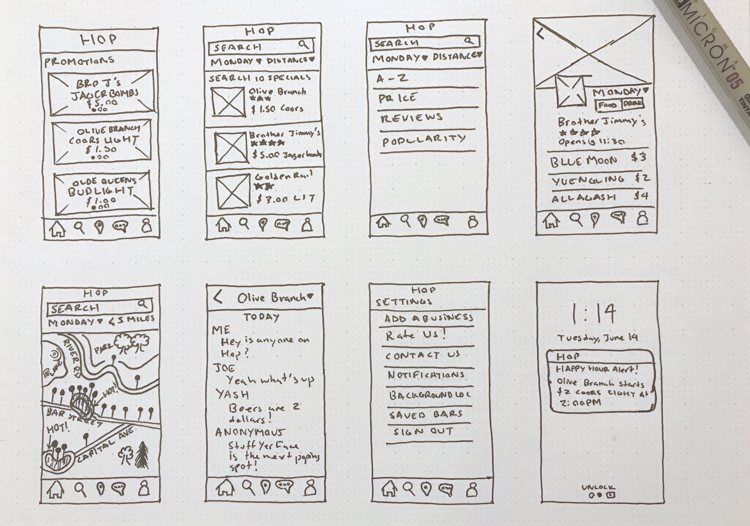
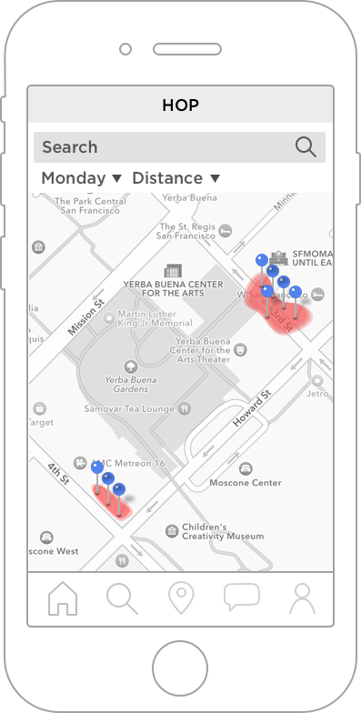
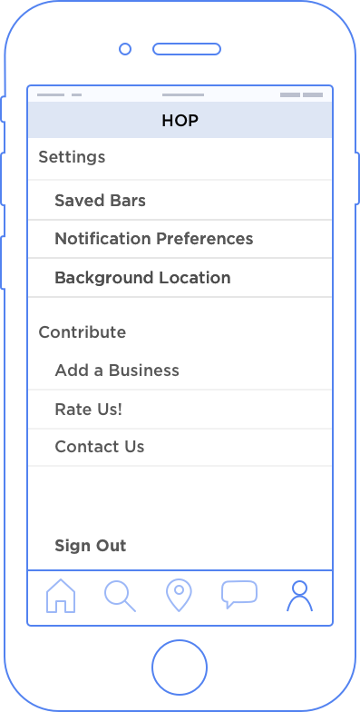

How many times have you been exploring someplace new when you think to yourself “Wow, I could really use a drink. I wonder what Happy Hour specials there are around me?”
We wanted to create a mobile application that would help you find the best Happy Hour specials in your area.
MY ROLE
THE JACK OF ALL TRADES
For this project I was the sole designer handling Branding, Visual Design, and User Experience. I worked with an Android and iOS developer to create requirements, make decisions, and develop the app.
I suggested we start the project with my personal favorite form of research: Personas.
This team was new to Personas, and wasn’t completely convinced at first, so I quickly sketched a Proto Persona to sell them on their long-term value.
Once they realized that they couldn’t immediately identify their target users Demographics, Goals, and Pain Points, they were adamant about needing Personas.
We interviewed our colleagues and friends who we assumed we knew a lot about. In reality, what we thought we knew was incorrect, and so creating in-depth Personas in fact saved the project from the start.
We discovered that we had 2 types of users:
Skylar - he just turned 21, he is a student, he doesn’t always attend class, and enjoys partying with friends throughout the week
Alyssa - she works 40 hours / week as an early career professional, goes on dates, and prefers to go out later in the week
After conducting the Persona activity, we identified and prioritized some of the key features (or requirements) that we had evidence our target users wanted.
Most up-to-date Happy Hour menus
Exclusive deals and rewards systems
Rich content (photos, reviews, vibe, etc.)
Map views of local bars and their traffic
Social media functionality
DESIGN
START WITH THE PEN
I wanted to visualize these features for the team by sketching the concepts and reach consensus before opening any software.

Once we had agreement on the key features, screen flow, and overall feel, I designed mid-fidelity wireframes in Sketch for rapid testing and iteration.
I used InVision to make a prototype, share with users, and collect feedback on the initial designs. Overall – I met with 10 diverse individuals.
Promotions
Search
Details

Map
Filter 1
Filter 2
Chat

Settings
EVALUATE
THE USERS WANT SIMPLICITY
After facilitating multiple feedback sessions on the mid-fidelity wireframes, many of the initial flaws came to focus. Here are some of the main findings:
Users were confused about the differences between Home and Search page because both contained deals and linked to the detail page.
Users did not understand the Chat feature and the value it gave them
Taking all this into consideration, we decided to consolidate the home page and search page into a single page titled “Discover”. We also nixed the chat feature and replaced it with a “Favorites” feature to save your favorite deals.